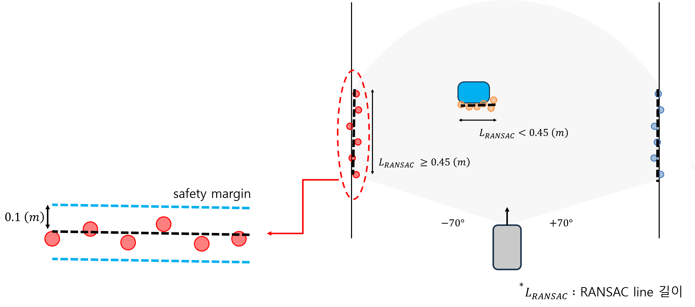
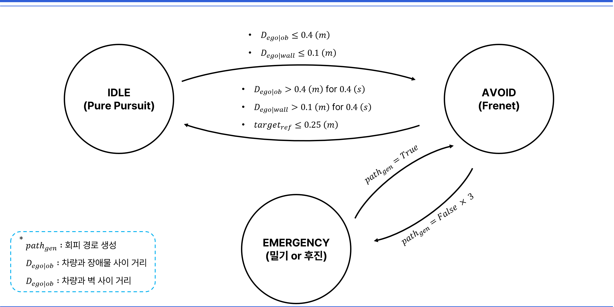

주행에 필요한 전방 140도 범위 사용
29TH ROBORACER AUTONOMOUS RACING COMPETITION
IFAC 2026 RoboRacer 장애물 인지와 회피 경로계획
Hokuyo 2D LiDAR 점군에서 트랙 벽과 장애물을 구분하고, 최대 30개 Frenet 후보 가운데 충돌하지 않으면서 기준 경로로 복귀할 수 있는 경로를 선택한 ROS 2 실차 모듈.
TOP 16국제 자율주행 경주
56개 팀 중 16강 진출
56개 팀 중 16강 진출
- 대회
- IFAC 2026, 부산 BEXCO
- 기간
- 2026.07–08
- 담당
- LiDAR 인지, Frenet 로컬 경로계획
- 팀
- 학생 5인, 지도교수 1인

01 / SYSTEM
전체 시스템과 담당 범위
IMU와 LiDAR 기반 위치추정, 장애물 인지, 회피 경로계획, Pure Pursuit 제어로 이어지는 전체 구성. 이 가운데 Perception과 FrenetPlanner 구현 담당.

담당 1Perception
LiDAR 점군 군집화, RANSAC 선분 추출, 벽과 장애물 구분
담당 2FrenetPlanner회피 후보 생성, 충돌 검사, 비용 비교와 최종 경로 선택
02 / VEHICLE
경기 차량 구성


03 / PERCEPTION
벽과 장애물 구분
LiDAR 점군을 물체 단위로 나눈 뒤 RANSAC 선분의 길이로 트랙 벽과 차량형 장애물을 구분했다. 긴 선분은 벽으로, 짧은 선분은 장애물로 전달해 플래너가 두 대상을 서로 다른 충돌 여유로 판단하도록 구성했다.

점군을 군집화한 뒤 RANSAC 선분 길이 비교
벽과 장애물의 위치, 형상, 안전 여유를 플래너에 전달
안전펜스가 끊긴 구간에서 발견한 오류
서로 떨어진 두 펜스의 점이 하나의 선분으로 연결되면서 빈 통로까지 벽으로 인식됐다. 인접한 점 사이의 간격이 크게 벌어지는 지점에서 선분을 나눠 실제 통로가 남도록 수정했다.
04 / PLANNING
Frenet 후보 선택

후보 경로 비용
mini 0.20 Jjerk,i + 10.0 Jsafety,i + 1.50 Joffset,i + 1.00 Jfinal,i + 0.05 Jtime,k
i = 1, 2, …, 15, k = 1, 2
- Jsafety
- 장애물과의 안전거리
- Joffset
- 기준 경로에서의 횡방향 이탈
- Jjerk
- 조향 변화의 부드러움
- Jfinal
- 회피 뒤 기준 경로 복귀
- Jtime
- 회피 경로에 도달하는 시간
05 / FSM
주행 상태 판정

06 / FIELD VIDEO
실차 주행
07 / TROUBLESHOOTING
실차에서 생긴 문제
끊긴 펜스가 하나의 벽으로 연결
빈 통로까지 막힌 것으로 인식돼 회피 후보가 모두 탈락.
점 사이 간격이 큰 위치에서 RANSAC 선분 분리코너에서 회피 판단이 늦게 시작
생성 경로는 안전했지만 실제 차량이 기준 경로보다 안쪽으로 약 0.2 m 주행하며 장애물과 충돌.
회피 판정 폭을 0.25 m에서 0.40 m로 확대속도가 오르자 회피 가능 거리 감소
같은 계획 주기에도 차량 이동거리가 늘어 회피 경로를 적용할 시간이 짧아짐.
경로 계산 주기 단축, 코너와 장애물 구간 속도 조정회피 경로 생성이 반복 실패
정지 상태에서는 주변을 다시 관측할 수 없어 같은 실패가 이어짐.
세 번 실패하면 EMERGENCY로 전환해 밀기 또는 후진08 / RESULT
경기 결과와 후속 개선
16강
56개 팀 참가 국제 자율주행 경주
2026년 8월 24–27일, 부산 BEXCO
- 경기 결과예선 통과와 16강 진출, LiDAR 인지, Frenet 경로계획 실차 운용
- 탈락 원인충돌 직후 Cartographer 위치추정이 무너지며 차량이 기준 경로를 잃고 후속 주행 중단
- 대회 후 검증연구실에서 Particle Filter를 적용해 충돌 뒤 초기 위치 복구 성능 확인
- 후속 설계Particle Filter로 자세를 먼저 안정화한 뒤 인식 신뢰도가 확보되면 Cartographer로 전환하는 복구 절차 설계
정상 주행 정확도만으로 위치추정 방식을 고르면 충돌 이후 복구가 늦어진다는 확인. 대회 결과를 모듈 종료가 아닌 복구 상태 설계의 입력으로 반영.